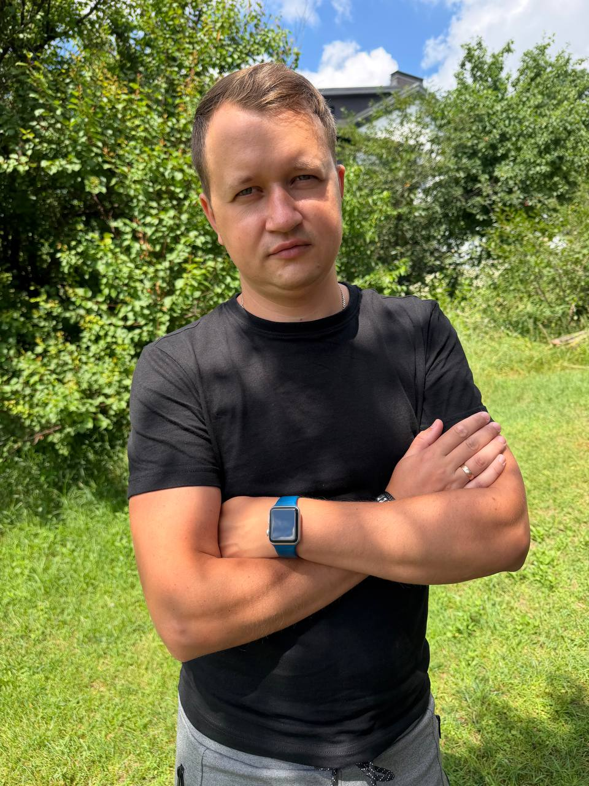

Командні операції
Розподіл навантаження, координація команди, контроль строків і стійкість роботи.
Operations Manager · Kyiv, Ukraine
Керівник із досвідом організації роботи команди з чотирьох журналістів у Football.ua: планування навантаження, розподіл завдань, контроль дедлайнів і координація із SMM.
Переходжу в операційний менеджмент, спираючись на практичний досвід керування командою та освіту за спеціальністю «Менеджмент організацій». Шукаю роль, у якій зможу організовувати щоденну роботу команди, узгоджувати відповідальність і покращувати робочі процеси.

Розподіл навантаження, координація команди, контроль строків і стійкість роботи.
Усунення постійних авралів, резервування відповідальності та передбачуване планування.
Контентні процеси, локалізація відео, YouTube, HTML/CSS, GitHub, Notion та AI-інструменти.
Управлінський кейс · Football.ua · 2020 — липень 2022
Керівник підрозділу українського футболу. Команда з чотирьох журналістів; управління підрозділом поєднував із власною авторською роботою.
Команда працювала в постійному цейтноті. Потрібно було організувати роботу підрозділу так, щоб планування враховувало загальне навантаження команди.
Планував загальний обсяг матеріалів, розподіляв теми, контролював дедлайни та якість публікацій. Координував роботу із SMM для реакції на інформаційні приводи.
Завдання планувалися на рівні підрозділу. Журналісти могли обирати теми, а критичні матеріали мали резервного виконавця.
Команда перейшла до системної роботи. Відпустка або хвороба когось із команди збільшувала навантаження, але не руйнувала робочий процес.
Професійний шлях
Не просто перелік посад, а еволюція від роботи з інформацією до організації людей, навантаження й процесів.
Ключовий управлінський досвід
Керував командою з чотирьох журналістів і поєднував управління підрозділом із власною авторською роботою.
Планування матеріалів підрозділу, розподіл тем, контроль дедлайнів і якості публікацій, координація із SMM.
Як я організував роботу команди →Виконував повний цикл локалізації відео між українською та російською мовами: переклад, редактура, синхронізація й накладання субтитрів у Subtitle Edit, підготовка фінальної версії та публікація на YouTube.
Підготовка новин, аналітичних матеріалів, подкастів і YouTube-контенту для Football.ua та Isport.ua в умовах високої швидкості й жорстких строків.
Професійні скаутські та аналітичні звіти про футболістів для футбольних клубів.
Інтерв’ю з футболістами, тренерами й керівниками клубів; анонси, матчеві звіти та тематичні матеріали.
Інтерв’ю, анонси, звіти про матчі й регулярна робота з редакційним контент-планом.
Публікація контенту, вебсторінки, CMS, навігація, SEO, робота із зображеннями та аналіз показників залучення.
SMM, статистичні звіти та опрацювання зворотного зв’язку від користувачів.
Принципи роботи
Розглядати не окрему задачу, а її місце в загальному потоці роботи.
Знімати невизначеність завчасно, а не героїчно рятувати процес в останню хвилину.
Процес має працювати навіть тоді, коли склад команди або обставини тимчасово змінюються.
Не вдавати всезнання, а швидко знаходити потрібних людей, дані й перевірені способи дії.
Навчання та розвиток
2023–2026 — перерва в кар’єрі для догляду за синами, поєднана з частковою зайнятістю в NAVI та професійним розвитком.
Практичні інструменти
Освіта
П’ять років навчання за спеціальністю «Менеджмент організацій» — фундамент, на який я спираюся у переході до операційного менеджменту.
Національний педагогічний університет імені М. П. Драгоманова
Резюме · PDF
Актуальне резюме Operations Manager: професійний досвід, управлінський кейс Football.ua, компетенції та освіта.
Контакти
Розглядаю роботу Operations Manager у Києві або дистанційно. Мій фокус — організація роботи команди, координація завдань і покращення процесів.